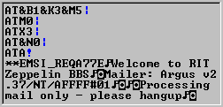
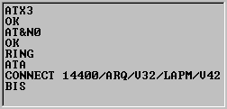

Modem Activity LED›s are located in the lower right corner of the Mailer Window when a Dial-up or TCP/IP line is selected; the LED›s help to show standard modem signals. There is also a modem debugging window in the upper right corner of the Mailer Window when a Dial-up line is active. It is designed to show modem input including control characters, in the upper part and modem output in the lower part.
Standard modem characters are black and control ones are blue.


See also: Extended Graphical User Interface Elements.